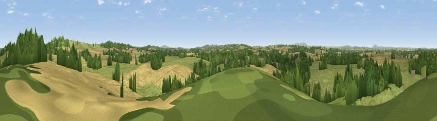

Viewpoint near Claverley
#22402 in England · top 44% of its area beats it · near Claverley · access?Where it is
The exact computed spot (SO 80125 94125). Click the marker for map links.
Public access: no public right of way or access land is recorded at this exact spot — it may be on private land. Computed from Natural England's CRoW access layer and OpenStreetMap rights of way — not the legal definitive map. Always verify locally.
The view, rendered

A 360° render of this exact spot computed from the terrain model, tree cover and land cover — summer colours, afternoon light, calibrated against photographs of famous viewpoints. Real trees, hedges and buildings will differ in detail.
The panorama
Grey silhouette: terrain skyline in each direction (720 bearings, Earth curvature and refraction included). Dashed green: skyline with trees (+15 m) and buildings (+8 m) as obstacles. Blue strip: how far the ground is visible on each bearing.
Where the view opens
Wedge length = distance to the farthest visible ground on that bearing (vegetation-aware). Rings at 10, 25 and 50 km.
What fills the view
43% grassland · 28% cropland · 26% woodland · 2% water · 1% built-up
Angular shares of the visible panorama (visual magnitude), not map area. Landscape diversity 0.52 (0–1 Shannon).
Key numbers
More beautiful places nearby
The staircase of upgrades: each row has a higher view potential than everything closer. Driving times are estimates from straight-line distance, calibrated against real road routing — check an actual route before setting out.
| Place | Direction | Drive | Score |
|---|---|---|---|
| Viewpoint near Claverley | NE · 1 km | ~4 min | 52.0 |
| Viewpoint near Claverley | WSW · 4 km | ~8 min | 60.0 |
| Viewpoint near Quatt | SSW · 6 km | ~13 min | 60.7 |
| Apley Terrace | WNW · 9 km | ~17 min | 65.1 |
| Viewpoint near Enville | S · 9 km | ~18 min | 73.1 |
| Knowle Hill | SW · 16 km | ~29 min | 75.5 |
| Viewpoint near Harley | WNW · 21 km | ~35 min | 79.9 |
| Viewpoint near Abdon | WSW · 22 km | ~37 min | 82.6 |
52.54461, -2.29450 · source: screening · position refined by local search. Computed location — check access rights before visiting.